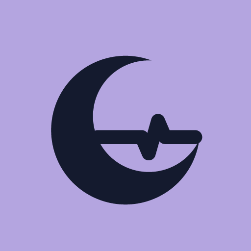

Sexto SinalTermos de uso
Versão de 19 de outubro de 2026.
Texto aguardando revisão jurídica antes do lançamento.
O que é o app
O Sexto Sinal ajuda a organizar o sono em torno da escala de plantões. O app é oferecido por MAURO NICOLAU ROSSI DESENVOLVIMENTO DE SOFTWARE LTDA, inscrita no CNPJ 67.662.174/0001-90.
Saúde
As sugestões do app são gerais e saem da sua escala. Elas não substituem a orientação de profissionais de saúde. Se o sono ruim continuar, procure um profissional de saúde.
Assinatura
- A assinatura é mensal ou anual, com 7 dias grátis para quem assina pela primeira vez.
- O app é vendido no Brasil, com preços em reais, mostrados na Google Play antes da compra.
- A cobrança, a renovação e o cancelamento são feitos pela Google Play, na conta que fez a compra.
- A assinatura renova sozinha até ser cancelada. Depois de cancelar, o acesso continua até o fim do período já pago.
- Sem assinatura, o app mostra o plano do dia e guarda os seus dados. A escala, a semana, os sons, o diário, o despertador e os lembretes ficam travados até assinar.
Os seus dados
Os seus dados ficam guardados no seu celular. Veja como eles são usados na Política de privacidade.
Contato
Dúvidas sobre estes termos: contato@sextosinal.com.br.